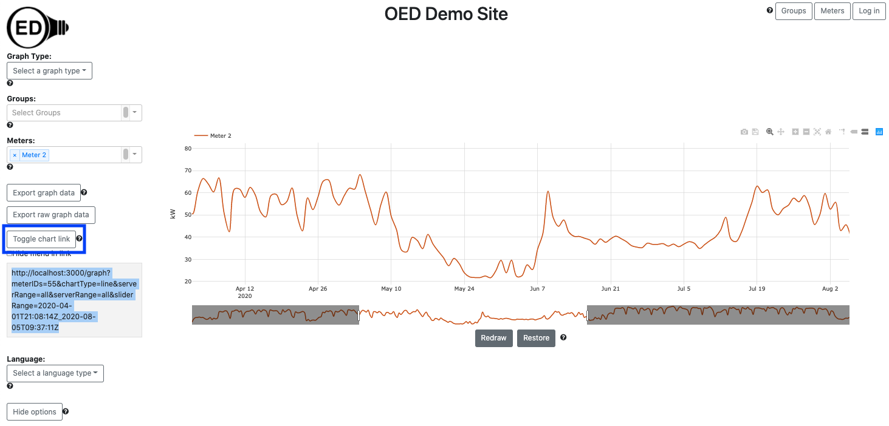

OED Documentation
Chart Link
Version V0.7.0
The latest version of this page is V1.0.0.
Documentation overview
User documentation
Information
Meters/Groups
Other Features
Admin documentation
Documentation versions for this page
Overview
There are times when you want to be able to reproduce the look of an OED graphic. For example, you want to provide or post a link so others can easily see a given graphic to make a point such as a comparison graph during an energy competition. Another example is where you create a complex graphic and want to be able to come back to it later to do more work. Whatever your reason, the chart link feature was designed to meet this need. It will provide a URL (web page link or can be used in the web browser address bar) that, when used, will recreate the graphic you currently see. While the same graphic is reproduced, you are in a full featured version of OED so you can continue to interact with the system as you wish.
Usage
First create the graphic that you want to reproduce. It can contain any graphic type, meters/groups, date range, etc. that you are interested in showing. Then click the "Toggle chart link" button (highlighted in a blue box in the next figure) to reveal the URL for this graphic. This URL may be long if you have lots of items and choices you made. You do not need to worry about the characters in the URL since it will just work. Once the URL is revealed, use your mouse to select the entire URL string (everything in the box revealed). (Note that using select all will highlight everything on the page and not just the URL so that will not work.) The following figure shows the image after doing all of this where the URL string was highlighted in blue by the web browser when selected. 
The sample graphic above has a reduced time range for the line graphic to show that all the features of the graphic will be reproduced. There is a checkbox labeled "Hide menu from link" (highlighted with a blue box in next figure). If it is checked, the URL will change so when it is used the menus on the left side will dock at the top, right of the screen. (See hiding options page for a complete description). Using the modified URL will automatically hide all these options when used. This can be useful if you want to use the URL to display information on a monitor without interaction or to discourage changing the image. Note that when the URL is used, a full featured OED is active so you can still use the docked menus as described on the hiding menu options page. The result of clicking on this box is shown in the next figure where you can see the URL changed from the previous figure.
Details
Because the slider for changing the time on the line graphic is controlled by Plotly code (our graphics package), OED does not immediately see that change. As a result, if you change the time range while the chart link area is open, you must click the "Toggle chart link" button to close it up and then click it again to reopen it. OED will then have updated the URL for the new time range.
You should not change (edit) the chart link to try to get other features. It is always best to create the graphic and use the URL provided by OED. The chart link will not work across OED sites as it contains the web address and specific meters/groups of your site.
The URL shown is from a development system and not a regular site. Thus, the URL is special and will not work on a normal site. As indicated above, you should use the URL given by OED on your site.